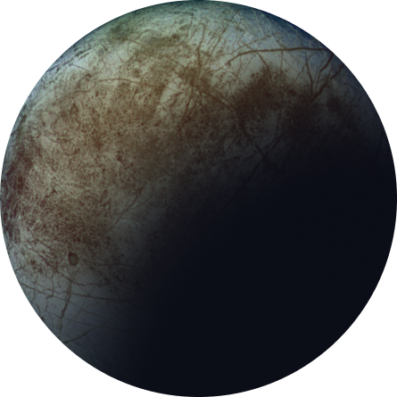
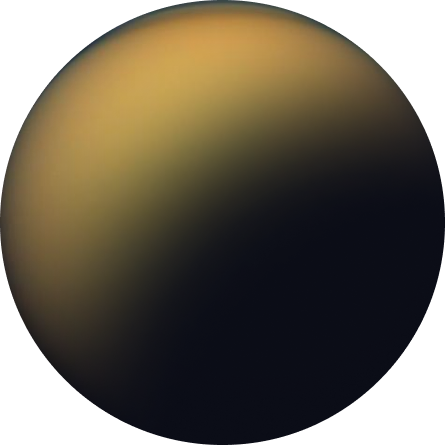
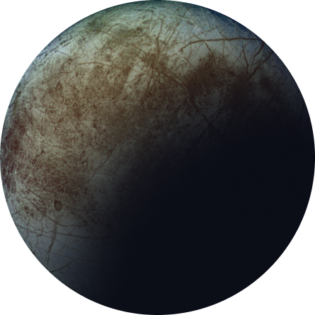
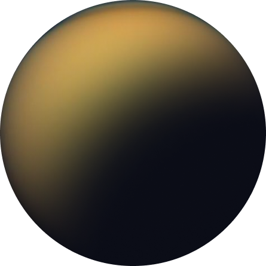

Moon
See our planet as you’ve never seen it before. A perfect relaxing trip away to help regain perspective and come back refreshed. While you’re there, take in some history by visiting the Luna 2 and Apollo 11 landing sites.

 



See our planet as you’ve never seen it before. A perfect relaxing trip away to help regain perspective and come back refreshed. While you’re there, take in some history by visiting the Luna 2 and Apollo 11 landing sites.
Don’t forget to pack your hiking boots. You’ll need them to tackle Olympus Mons, the tallest planetary mountain in our solar system. It’s two and a half times the size of Everest!
The smallest of the four Galilean moons orbiting Jupiter, Europa is a winter lover’s dream. With an icy surface, it’s perfect for a bit of ice skating, curling, hockey, or simple relaxation in your snug wintery cabin.
The only moon known to have a dense atmosphere other than Earth, Titan is a home away from home (just a few hundred degrees colder!). As a bonus, you get striking views of the Rings of Saturn.